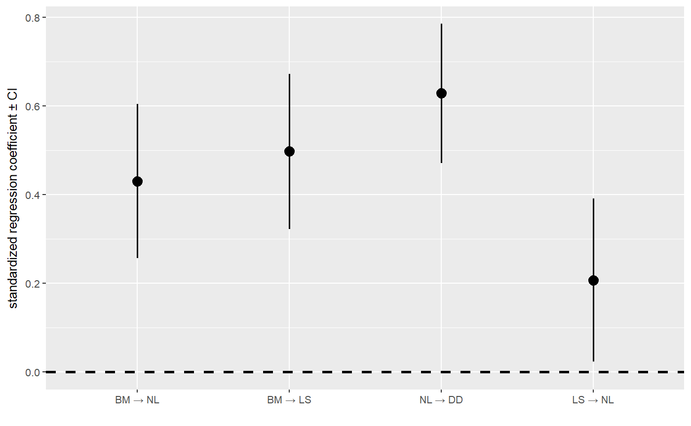

Perform model averaging on a list of DAGs.
Arguments
- fitted_DAGs
A list of
fitted_DAGobjects containing coefficients and standard errors, usually obtained by usingest_DAG()on several DAGs.- weights
A vector of associated model weights.
- avg_method
Either
"full"or"conditional". The methods differ in how they deal with averaging a path coefficient where the path is absent in some of the models. The full method sets the coefficient (and the variance) for the missing paths to zero, meaning paths that are missing in some models will shrink towards zero. The conditional method only averages over models where the path appears, making it more sensitive to small effects. Following von Hardenberg & Gonzalez-Voyer 2013, conditional averaging is set as the default.- ...
Use of the ellipses is deprecated.
See also
est_DAG() for what the coefficients mean.
Examples
# Normally, I would advocate the use of the phylo_path and average
# functions, but this code shows how to average any set of models. Note
# that not many checks are implemented, so you may want to be careful and
# make sure the DAGs make sense and contain the same variables!
candidates <- define_model_set(
A = NL ~ BM,
B = NL ~ LS,
.common = c(LS ~ BM, DD ~ NL)
)
fit_cand <- lapply(candidates, est_DAG, rhino, rhino_tree,
model = 'lambda', method = 'logistic_MPLE')
ave_cand <- average_DAGs(fit_cand)
coef_plot(ave_cand)
